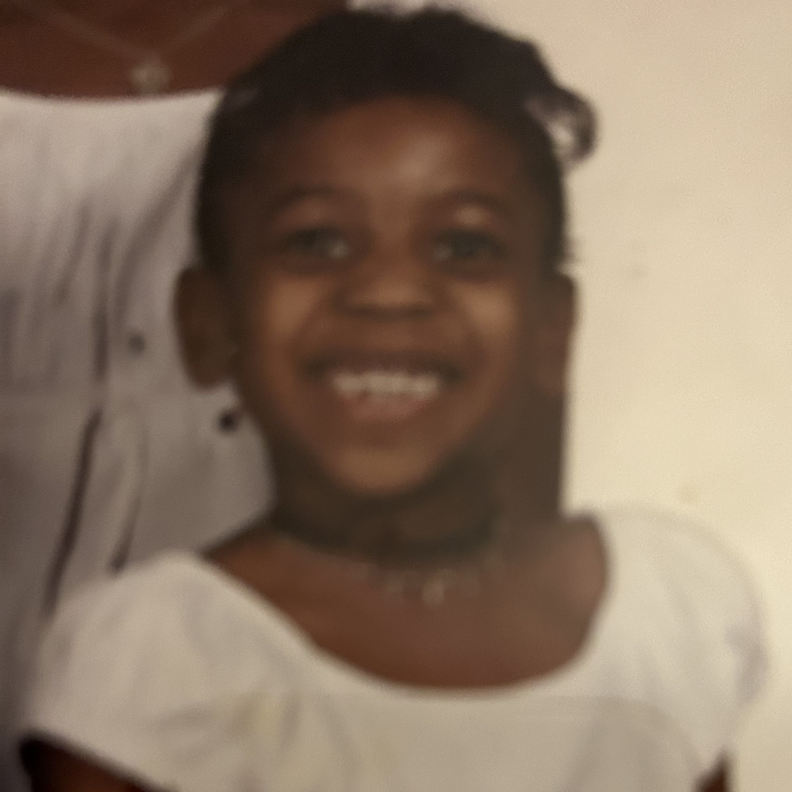

Growing Up
When I was growing up, I always said I wanted to be a lawyer and marry rich with no kids,
but I did the total opposite, and nothing is wrong with that. However, it shows you how
green you can be when you're a kid. My younger self would tell me to live it up, meet now,
have a run, and stop worrying about adult things when you're not even an adult yet.
As a kid, I loved playing with Bratz. My favorite character was Sasha because she matched mine.
She was my twin, and she was even real, but that's called a great imagination, okay?
